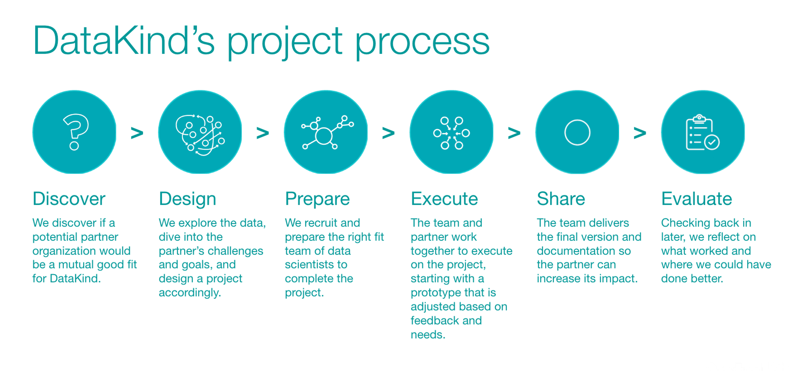

Project Stages and Roles
Welcome to the section of the Playbook all about how we do projects! Here we detail how to do an excellent DataKind project across each project stage. DataKind has six project stages, and each stage contains several “must do”s, which are tasks or minimum quality standards that every DataKind project must complete.
Every stage has Playbook resources including guidelines, best practices, “how to” instructions, templates, etc. Please note that across every stage and at all points of the project process, either group (DataKind or the partner organization) can back out if the arrangement is no longer working for them.
Discover (~2-10 weeks)
This first project stage is when we work with the potential partner to discover if they would be a mutual good fit for a DataKind project collaboration. This stage includes ensuring mission and value alignment, enlisting a Project Champion (project partner representative), and mapping the organization’s processes and theory of change so as to understand areas of potential data science intervention. Discovery is complete with the creation and sharing of a concept note. .
Design (~2-10 weeks)
Once both parties decide to move forward with designing a project together, the next stage starts with DataKind and the project partner signing a mutual NDA and a data licensing agreement, so DataKind can acquire the data in accordance with security requirements. Next, we creatively design the project, using a data audit to refine and analyze the project ideas, and carefully consider all possible outcomes to decide on the deliverables. This stage ends when we have a detailed Project Brief that includes an impact measurement plan and clear pathways for project sustainability. Together, completing the Discovery and Design stages is also known as “scoping” a project.
Prepare (~4-6 weeks)
The Prepare Stage involves the actual preparations to do the project, which include recruiting a project team, creating a detailed project plan for the project volunteers, and launching the project. This stage is complete when we have a solid plan, an onboarded team, and have had the project kick-off meeting!
Execute (~1-6 months)
The Execute Stage begins with the project kick-off and ends with a project ready to be delivered. This stage is the least standardized across all projects, as each project varies in complexity and deliverables - one size, process, or approach does not fit all here. To be successful, the project manager will need to add their own additional checkpoints and deliverables based on the project requirements and the type of engagement.
Share (~3-10 weeks)
This stage is all about sharing the deliverables with the partner, ensuring everything is properly documented, supporting the partner’s adoption of the project, hosting a project retrospective, and sharing learnings and results. We share the project with the partner organization, and we share the learnings externally.
Evaluate(~2-10 weeks)
The final stage happens between 3 to 24 months after project completion, at a time decided in advance by the project team. It consists of evaluating the project outcomes, documenting learning, and determining if there should be next steps based on the results.
Project Roles
- Chapter Leader or DataKind staff support - Each project has someone who is ultimately responsible for overseeing the project process from Discovery to Evaluation, typically a Chapter Leader or DataKind staff member. These individuals often oversee a portfolio of projects and focus on quality assurance, whereas most other volunteer roles focus exclusively on one project at a time. This person is also responsible for recruiting and supporting any volunteers needed for the project team, and updating the project’s Salesforce record.
- Scoper - The person who leads the Discovery and Design stages to assess whether there is a viable project, and helps shape the plan for the project and its intended outcomes. The person serving as Scoper might be DataKind staff, a Chapter Leader, a future potential Data Ambassador, or a volunteer dedicated to scoping projects for a chapter.
- Data Ambassador - The volunteer who leads the team of volunteers working on the project. Typically an experienced DataKind volunteer and technical expert, the DA is responsible for converting the partner's needs into scoped data problems, digging into the data to understand the depth of what can be done, and organizing the team's efforts to ensure successful project completion.
- Project Manager - The volunteer who sets up and manages the necessary systems for effective technical project management, ensures the project team stays on track, and troubleshoots any roadblocks or issues that arise.
- Volunteers - Other volunteers may serve in a variety of roles according to the project needs, from data analyst to user experience designer to database engineer.
- Evaluator - The person responsible for evaluating the project’s success after it is completed, typically the Chapter Leader, DataKind staff member, or possibly the Data Ambassador if they opt to stay involved beyond project completion.
- On the social impact organization side, the Project Champion is the person at the partner organization responsible for the project from their side, and who works closely with the DataKind team throughout the project process.
How to Volunteer at DataKind

Rachel Wells
@rachelaurynManaging the Project Champion Experience

Rachel Wells
@rachelaurynVolunteer Tracking Hours FAQ
Rachel Wells
@rachelaurynOffice hours

Nicole Choi
@nicchoi29DataKind’s Ethical Principles

Cynthia Lo
@csmloContact us
If you would like to learn more about us, partner with us, or get in touch, email us at community@datakind.org
Subscribe